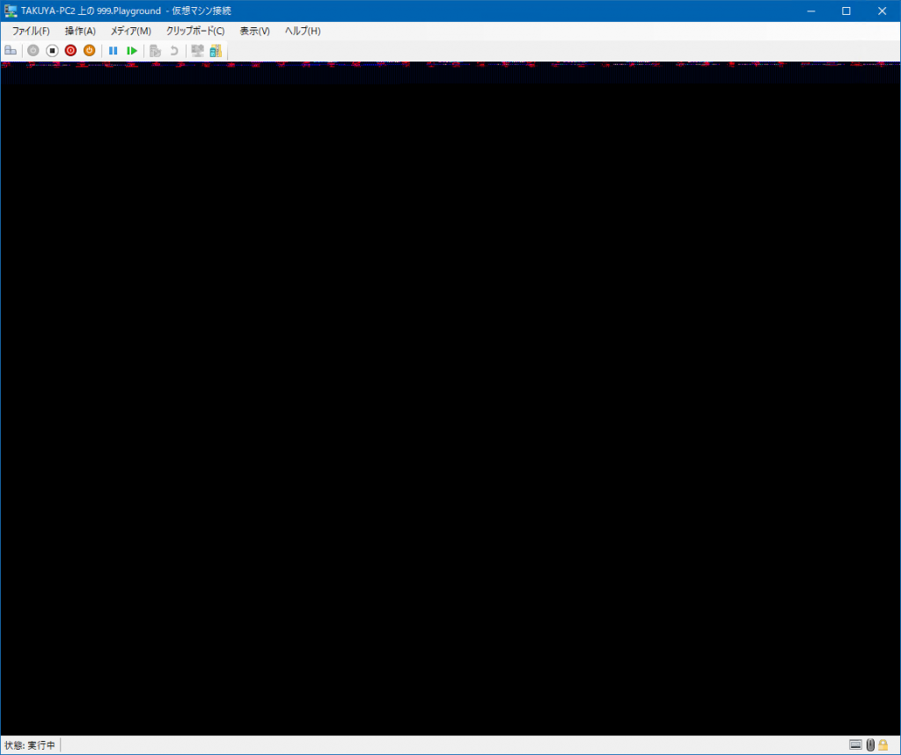
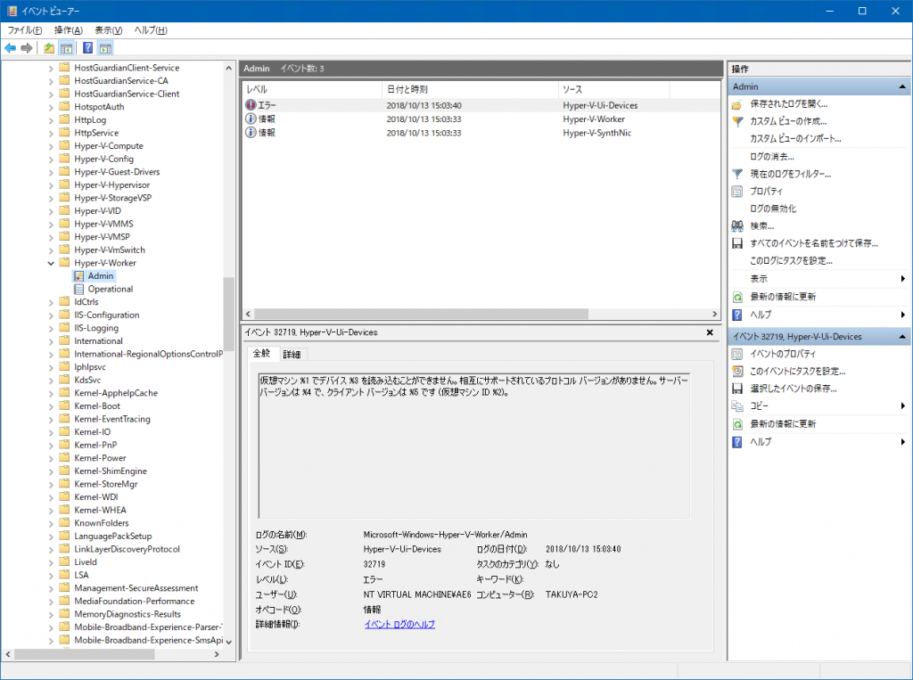
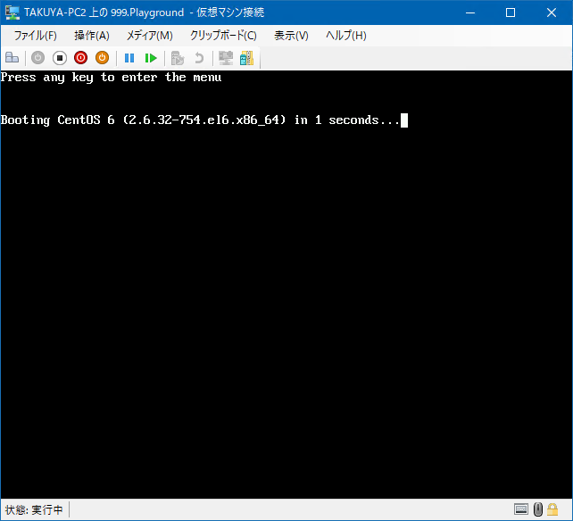
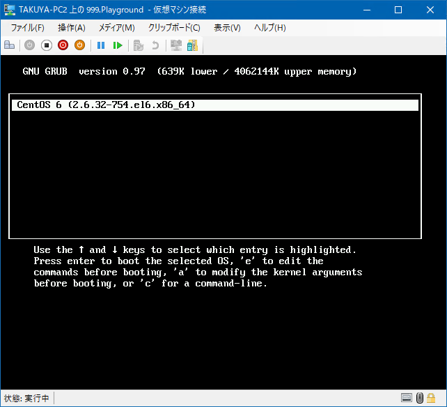
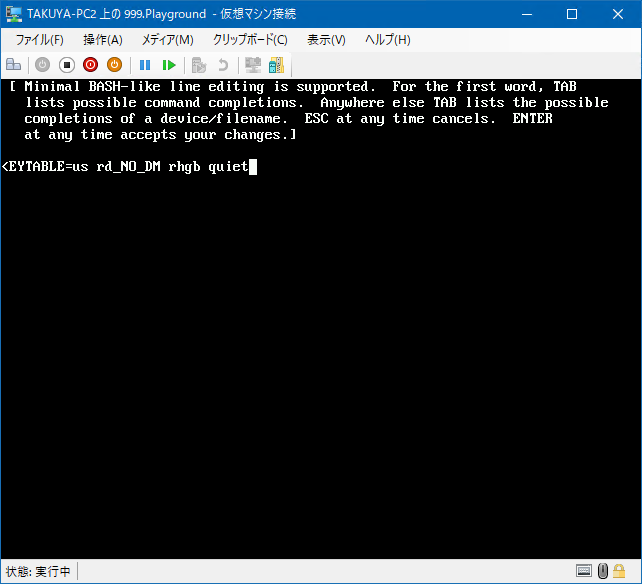
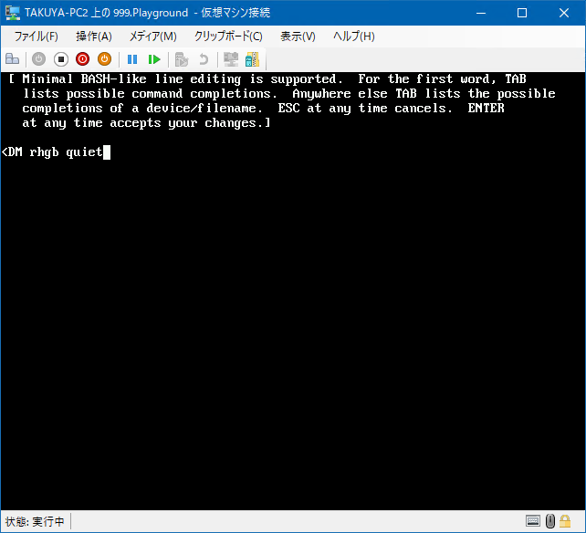
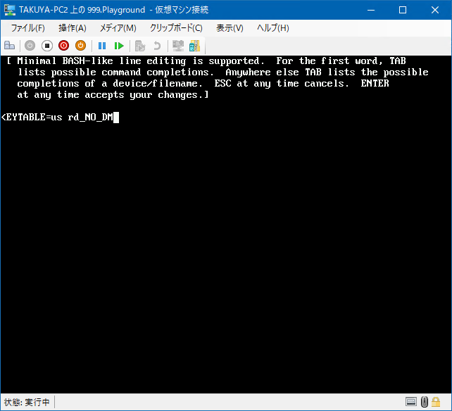
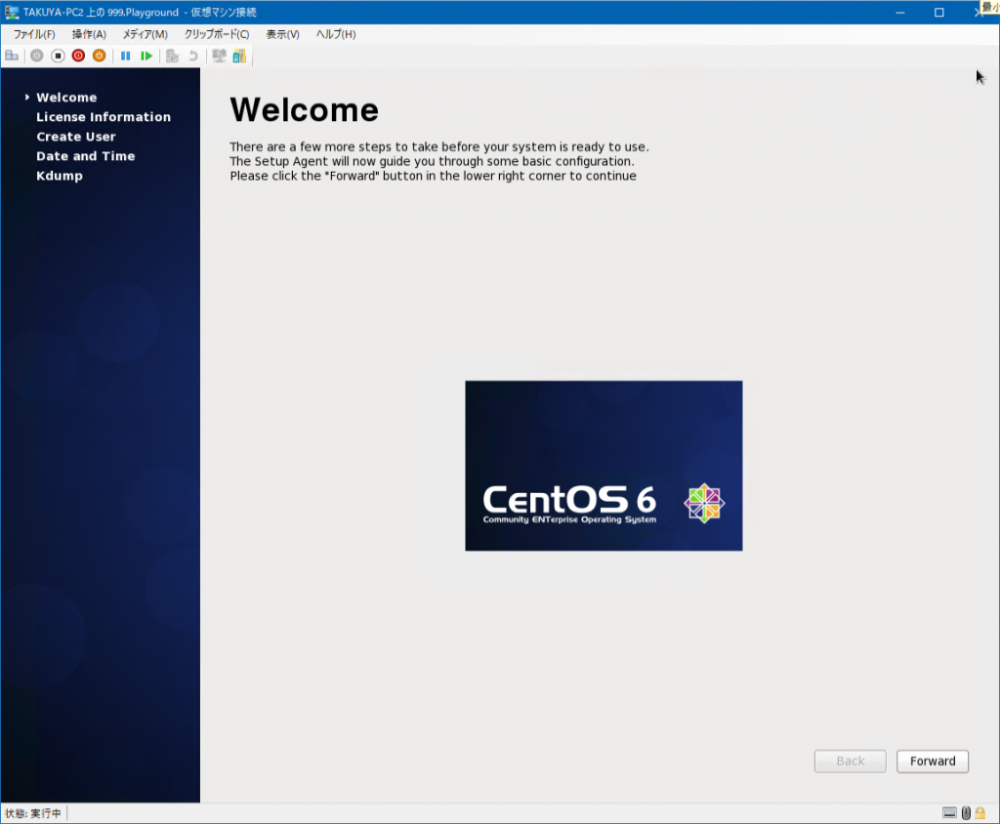

Introduction
Windows 10 April 2018 Update (Ver.1803) のマシンにおいて、Hyper-V上のLinux仮想マシンが起動しない現象が発生した。 こんな感じになります。

具体的に起動しないマシンは、
{kind=link}
- 1803で新規に作成したマシン (世代1で作成)
- 1803より前の環境で作成し、1803にVHDをコピーして再作成したマシン (世代1で作成)
という条件である。 要するに世代1で作成するのが不味かったのだが、既存の資産が動いているレガシーなLinuxだとそうも言っていられない。 これが会社のマシンで起こり、自宅の環境でも再現してしまったので、解決策を模索した。
Resolution
Google先生に聞いても、この現象に遭遇している人がいなかった。 なので、自分で探すこと1週間。解決のきっかけに気づいたのは、イベントビューアを見ていたときである。
 Microsoft-Windows-Hyper-V-Worker-Admin に奇妙なログが記載されていた。 仮想マシン %1 でデバイス %3 を読み込むことができません。相互にサポートされているプロトコル バージョンがありません。サーバー バージョンは %4 で、クライアント バージョンは %5 です (仮想マシン ID %2) 。 どうも、問題のマシンを立ち上げた時に記録されている模様。 これを見て思ったのは、グラフィック系統のデバイスが正しく読み込まれていないから、起動時におかしな画面に陥るのでは?と推測。 だから、起動時にグラフィック表示をなくせば起動できるのでは?と予想。 試したところ、ビンゴでした。 下記のOSは CentOS 6.10 ですが、手順はどのOSでも似たようなものかと。
{kind=link}
1. 起動
下記の画面でキーを押下して、メニューに入ります。

{kind=link}
2. GRUB
下記のメニューが表示されたら a を押下して、カーネルの引数を編集する画面に入ります。

{kind=link}
3. カーネル引数の編集
OSの状態によって評される文字列が異なります。 例えば、下記はOSをインストールした直後になります。
 下記はOSをインストールして、初期ユーザの設定が終わった以降になります。  どちらでも共通に存在する rhgb quiet を削除し、Enterキーを押下し、ブートを再開します。 
{kind=link}
{kind=link}
{kind=link}
4. 無事に起動
一瞬、画面が乱れた問題になった画面が表示されますが、少し待つとブートが継続されます。

{kind=link}
5. 永続化
ここまでの方法はその場限りで再起動すれば戻ってしまいます。 なので、GRUBの設定ファイルを編集することで設定を永続化します。 無事にログインしたら、シェルから設定ファイルを編集します。 [code lang=”shell”] $ sudo vi /etc/grub.conf [/code] 編集ファイルを開くと下記のような状態です。 [code] # grub.conf generated by anaconda # # Note that you do not have to rerun grub after making changes to this file # NOTICE: You have a /boot partition. This means that # all kernel and initrd paths are relative to /boot/, eg. # root (hd0,0) # kernel /vmlinuz-version ro root=/dev/mapper/VolGroup-lv_root # initrd /initrd-[generic-]version.img #boot=/dev/sda default=0 timeout=5 splashimage=(hd0,0)/grub/splash.xpm.gz hiddenmenu title CentOS 6 (2.6.32-754.el6.x86_64) root (hd0,0) kernel /vmlinuz-2.6.32-754.el6.x86_64 ro root=/dev/mapper/VolGroup-lv_root rd_NO_LUKS LANG=en_US.UTF-8 rd_NO_MD rd_LVM_LV=VolGroup/lv_swap SYSFONT=latarcyrheb-sun16 rd_LVM_LV=VolGroup/lv_root KEYBOARDTYPE=pc KEYTABLE=us rd_NO_DM rhgb quiet initrd /initramfs-2.6.32-754.el6.x86_64.img [/code] これを下記のように編集します。 わかりにくいですが、先述のように、rhgb quietを削除するだけです。 [code] # grub.conf generated by anaconda # # Note that you do not have to rerun grub after making changes to this file # NOTICE: You have a /boot partition. This means that # all kernel and initrd paths are relative to /boot/, eg. # root (hd0,0) # kernel /vmlinuz-version ro root=/dev/mapper/VolGroup-lv_root # initrd /initrd-[generic-]version.img #boot=/dev/sda default=0 timeout=5 splashimage=(hd0,0)/grub/splash.xpm.gz hiddenmenu title CentOS 6 (2.6.32-754.el6.x86_64) root (hd0,0) kernel /vmlinuz-2.6.32-754.el6.x86_64 ro root=/dev/mapper/VolGroup-lv_root rd_NO_LUKS LANG=en_US.UTF-8 rd_NO_MD rd_LVM_LV=VolGroup/lv_swap SYSFONT=latarcyrheb-sun16 rd_LVM_LV=VolGroup/lv_root KEYBOARDTYPE=pc KEYTABLE=us rd_NO_DM initrd /initramfs-2.6.32-754.el6.x86_64.img [/code] これで設定が永続化されます。 ただし、これらを行っても、たまに起動に失敗することがあります。 その時はリセットボタンで再度ブートをやり直します。